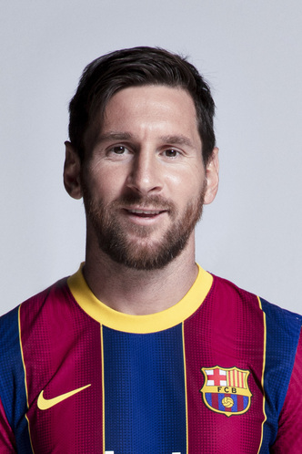
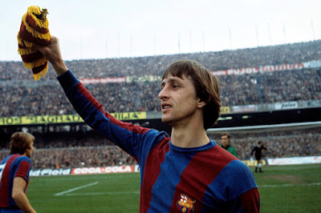
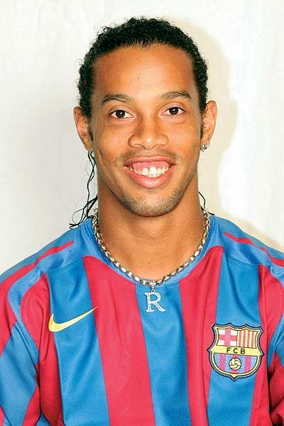
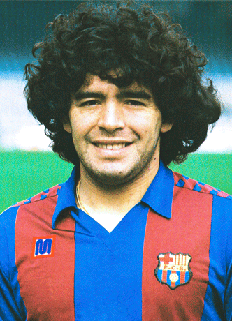
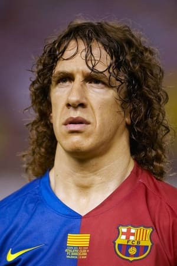
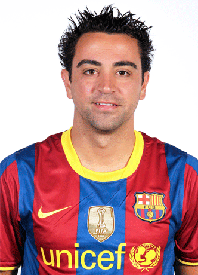
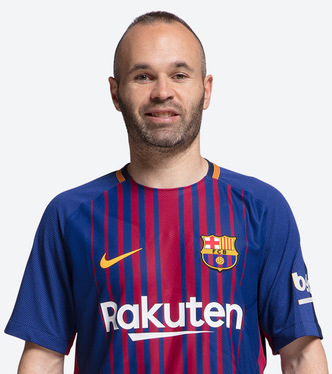

Máximo goleador y símbolo eterno del Barça.

Revolucionó el estilo del club con su visión total del juego.

El brasileño que devolvió la magia y la sonrisa al Barça.

Una leyenda mundial que también vistió la camiseta blaugrana.

Capitán y símbolo de coraje, respeto y liderazgo.

Cerebro del mediocampo, ejemplo de precisión y visión.

Elegancia y magia en cada toque; autor de goles inolvidables.